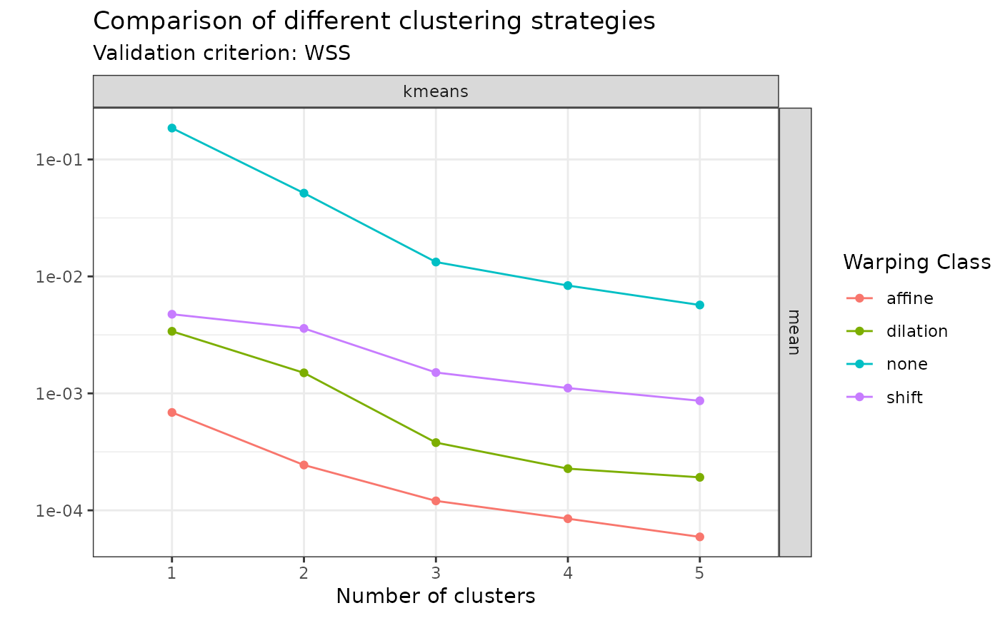

This function searches for clusters in the input data set using different
strategies and generates an object of class mcaps which stores multiple
objects of class caps. This is a helper function to facilitate comparison
of clustering methods and choice of an optimal one.
Usage
compare_caps(
x,
y,
n_clusters_max = 5L,
metric = c("l2", "pearson"),
clustering_method = c("kmeans", "hclust-complete", "hclust-average", "hclust-single"),
warping_class = c("affine", "dilation", "none", "shift", "srsf"),
centroid_type = c("mean", "medoid", "lowess", "poly"),
cluster_on_phase = FALSE
)Arguments
- x
A numeric vector of length \(M\) or a numeric matrix of shape \(N \times M\) or an object of class
funData::funData. If a numeric vector or matrix, it specifies the grid(s) of size \(M\) on which each of the \(N\) curves have been observed. If an object of classfunData::funData, it contains the whole functional data set and theyargument is not used.- y
Either a numeric matrix of shape \(N \times M\) or a numeric array of shape \(N \times L \times M\) or an object of class
fda::fd. If a numeric matrix or array, it specifies the \(N\)-sample of \(L\)-dimensional curves observed on grids of size \(M\). If an object of classfda::fd, it contains all the necessary information about the functional data set to be able to evaluate it on user-defined grids.- n_clusters_max
An integer value specifying the maximum number of clusers to use. Defaults to
5L.- metric
A string specifying the metric used to compare curves. Choices are
"l2"or"pearson". Defaults to"l2". Used only whenwarping_class != "srsf". For the boundary-preserving warping class, the L2 distance between the SRSFs of the original curves is used.- clustering_method
A character vector specifying one or more clustering methods to be fit. Choices are
"kmeans","hclust-complete","hclust-average"or"hclust-single". Defaults to all of them.- warping_class
A character vector specifying one or more classes of warping functions to use for curve alignment. Choices are
"affine","dilation","none","shift"or"srsf". Defaults to all of them.- centroid_type
A character vector specifying one or more ways to compute centroids. Choices are
"mean"or"medoid". Defaults to all of them.- cluster_on_phase
A boolean specifying whether clustering should be based on phase variation or amplitude variation. Defaults to
FALSEwhich implies amplitude variation.
Value
An object of class mcaps which is a tibble::tibble storing the
objects of class caps in correspondence of each combination of possible
choices from the input arguments.
Examples
#----------------------------------
# Extracts 15 out of the 30 simulated curves in `simulated30_sub` data set
idx <- c(1:5, 11:15, 21:25)
x <- simulated30_sub$x[idx, ]
y <- simulated30_sub$y[idx, , ]
#----------------------------------
# Runs an HAC with complete linkage with affine alignment, searching for up
# to 2 clusters and using the sample mean as centroid type:
out <- compare_caps(
x = x,
y = y,
n_clusters_max = 2,
warping_class = "affine",
clustering_method = "hclust-complete",
centroid_type = "mean"
)
#----------------------------------
# Then visualize the results
# Either with ggplot2 via ggplot2::autoplot(out)
# or using graphics::plot()
# You can visualize the WSS values:
plot(out, validation_criterion = "wss")

# Or the average silhouette values:
plot(out, validation_criterion = "silhouette")
#> `geom_line()`: Each group consists of only one observation.
#> ℹ Do you need to adjust the group aesthetic?